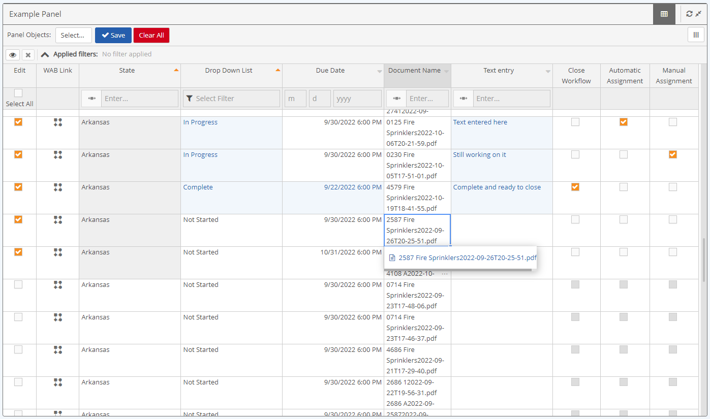

The Bulk Workflow Management panel allows managers and reviewers to edit and transition large volumes of workflows within a single panel.
To review and transition large volumes of Workflows using Bulk Workflow Management
In the Portal, navigate to a portal page with the Bulk Workflow Management panel of interest.
Each row is a workflow instance that users can edit, review, and transition, without having to open each workflow.

To select a workflow to edit, select the checkbox in the Edit column.
Multiple workflows can be selected and reviewed at the same time.
In the WAB links column, links to the Advanced Workflows (WAB), portal forms, or the system model are included for end users to click and view.
If a documents column is enabled, documents of a workflow can be clicked and viewed, but cannot be uploaded.
You can view parent and grandparent documents as a separate column if the necessary, documents are attached to ascendants.
Update the remaining editable field types accordingly, for the Workflow you are reviewing:
Date/time Fields (including date only, time only, and native due date)
Text box fields
Drop down lists
True/False (as a drop down list)
Multi-select list
Once your review is completed you can close or transition the workflow as follows:
Close Workflow
Delete Workflow
Reopen Workflow
These workflow actions will be available for adding to any workflow management panel.
Additional workflow actions can be created and added as a workflow column specific to the workflows a user is working with. This can be created in designer mode.
If you want to clear the changes made to a workflow, click Clear all.
Once edits and selections made to a workflow are satisfactory, click Save.